鬥士 負責控速、施加烙印與拉怪，讓傷害結算機制先行成立，是整套輸出的啟動位。
賢者 負責減防、引爆與站位修正，是傷害放大的關鍵窗口，缺少此職業很難打出有效傷害。
術士 主要補充破陣與元素狀態，提升整體破韌效率與傷害上限，並非必要核心位。
騎士 偏向輔助增益與功能位，提供寒冷、水勢或鼓舞等加成，用於補強傷害或優化輸出環境。
總結：鬥士＋賢者決定能否打出傷害，術士與騎士則是提升上限的補強位。
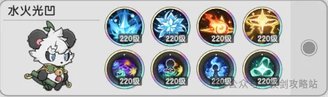
出處：杖劍傳説攻略站
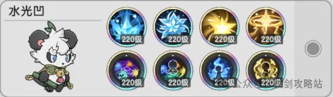
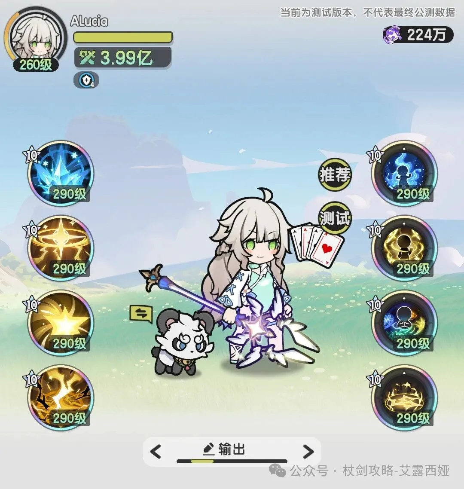
出處：艾露西娅ALucia
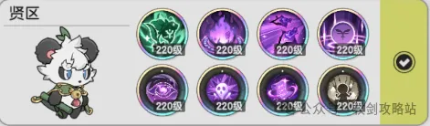
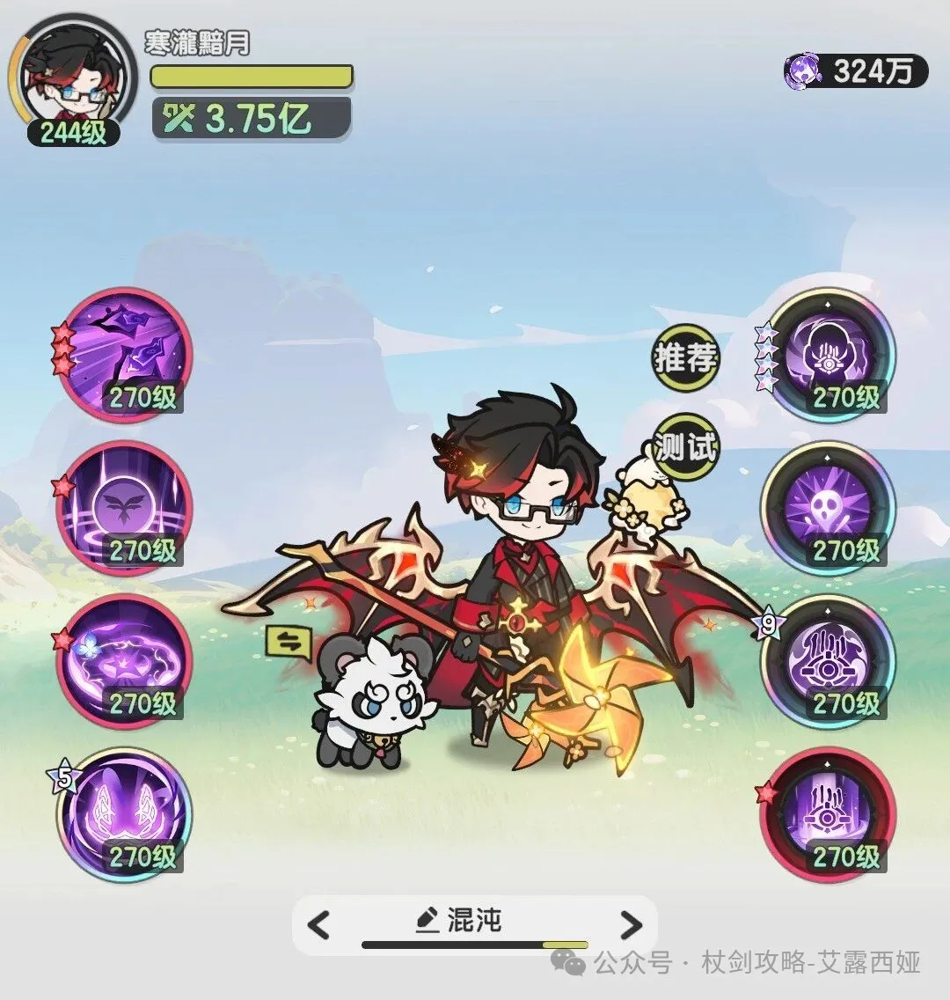
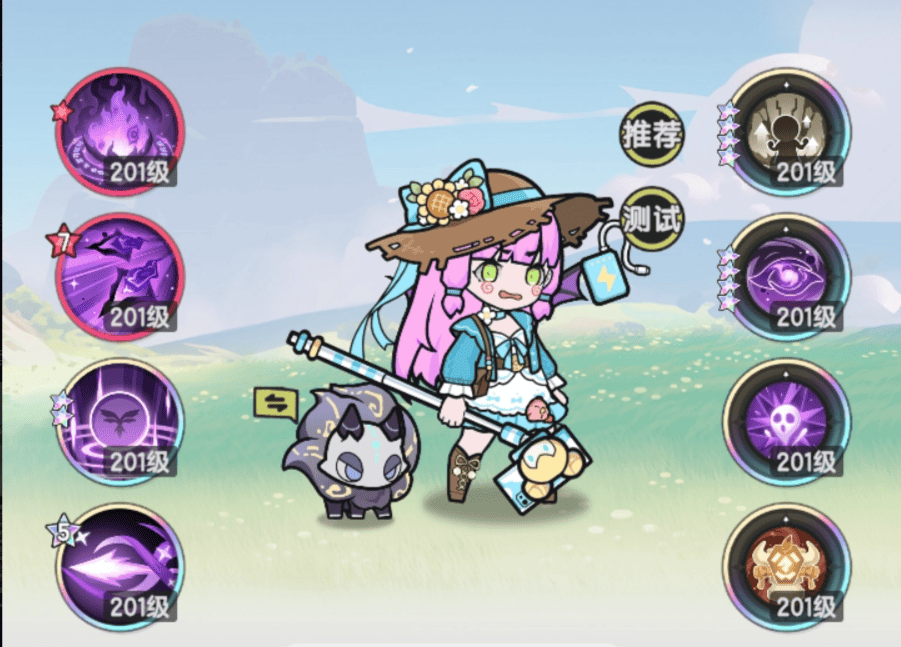
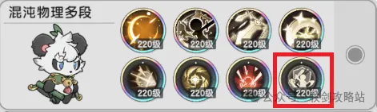
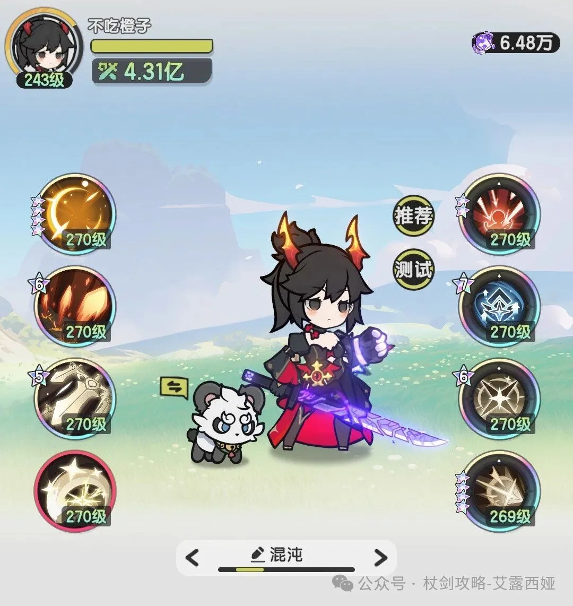
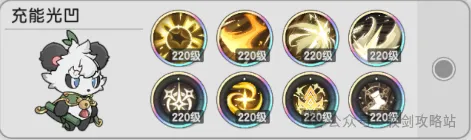
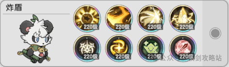
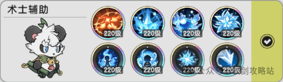
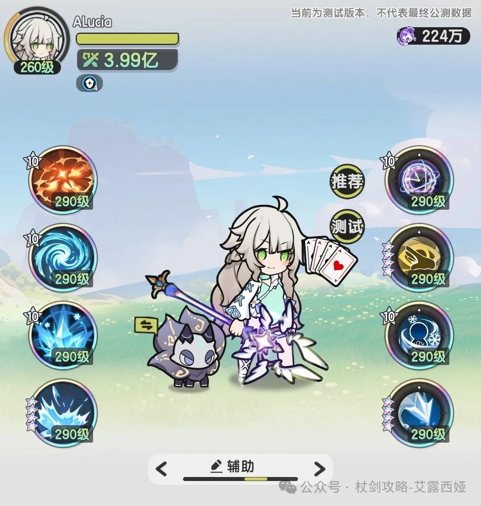
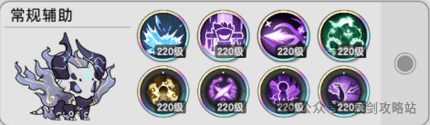
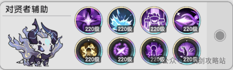
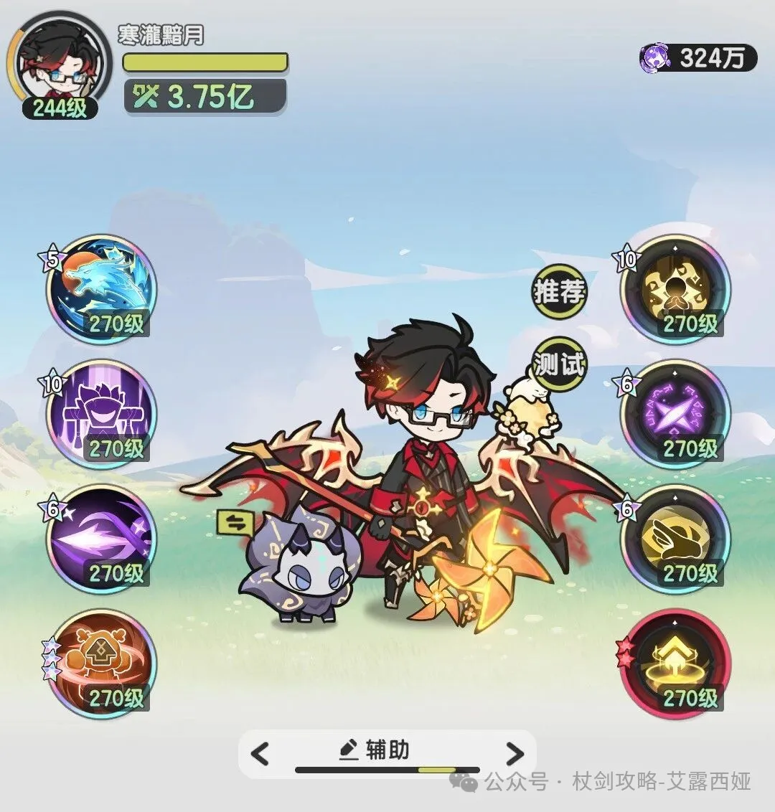
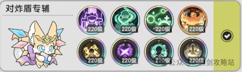
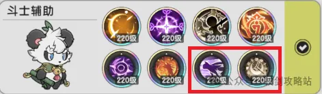
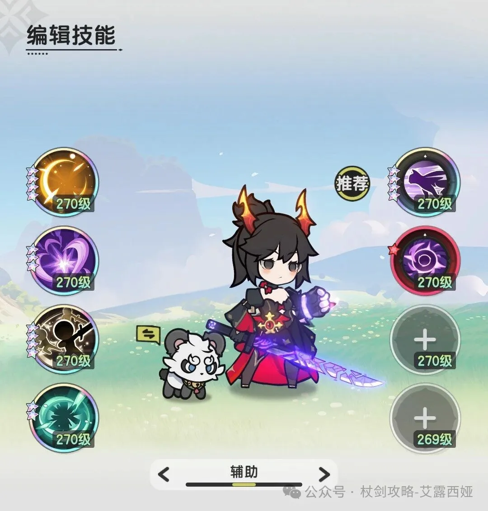
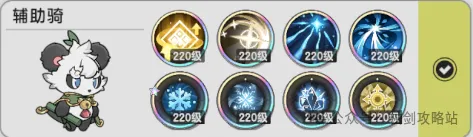
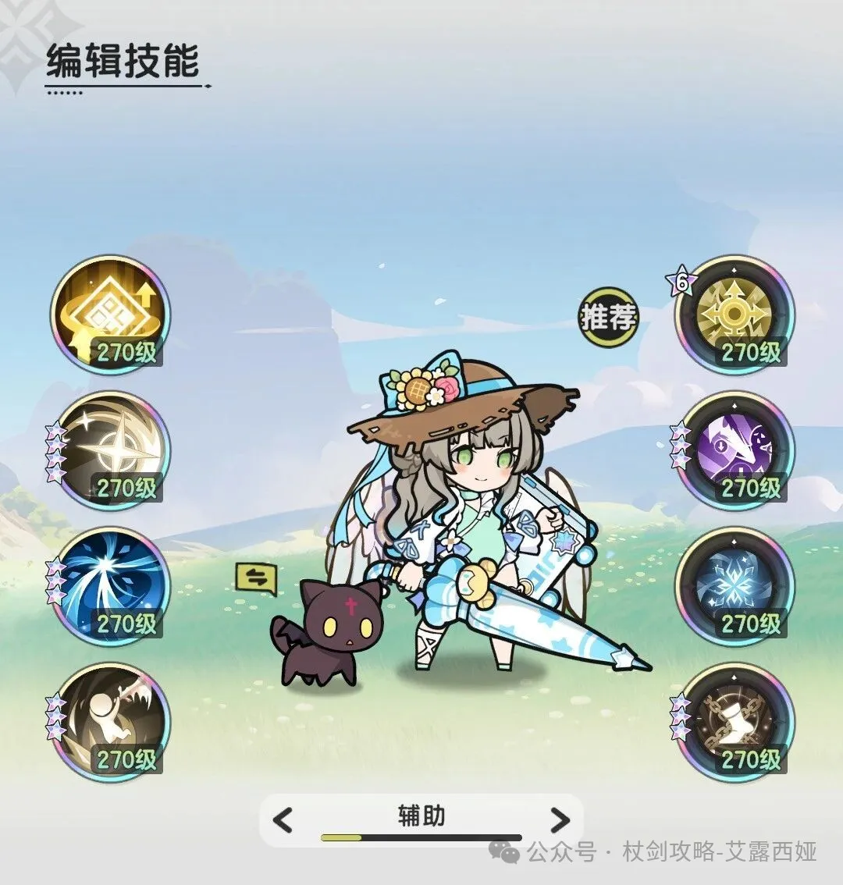